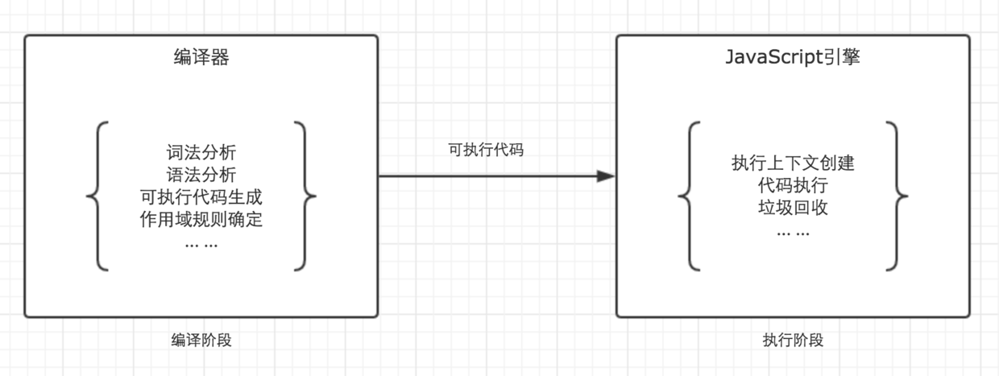
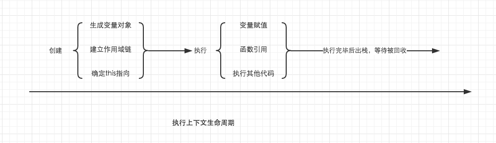

分享人：郑明月
目录
1.背景介绍
2.知识剖析
3.常见问题
4.解决方案
5.编码实战
6.扩展思考
7.参考文献
8.更多讨论
闭包（closure）是Javascript语言的一个难点，也是它的特色，很多高级应用都要依靠闭包实现。简单来说，假设函数A在函数B中进行了定义，并且当A在执行时访问了B内部的变量对象，那么B就是一个闭包
那么闭包的具体定义是什么呢？当函数可以记住并访问所在的作用域（全局作用域除外）时，就产生了闭包，即使函数是在当前作用域外执行
作用域和作用域链
在说到闭包的同时，我们不得不说一下作用域和作用域链，js的执行过程分为两个阶段，第一阶段是代码编译阶段，第二阶段是代码执行阶段。在编译阶段，我们的代码将会被翻译成可执行的代码、并且在此阶段我们的作用域规则将会被确定。在第二阶段，主要任务是执行可执行代码，重点注意下，我们的执行上下文将会在此时生成
执行上下文
执行上下文分为两个阶段：创建阶段：在进入函数的时候创建执行上下文，这个创建的操作中，包括了生成变量对象，建立作用域链、确定this指向。
执行阶段：包括变量赋值、函数引用、执行其他代码。经历过这两个阶段之后，它就会等待被js的垃圾回收机制回收
它在创建执行上下文的时候，先生成了变量对象用于保存我们的变量，在这个变量对象中，以function名称为属性名的变量将会储存一个指向function的指针，如果后面存在着同名的函数，那么前面的将会被覆盖，而以var形式赋值的变量将会以这个变量名为属性名储存但是值是undefined，并且，如果具有同名的变量名，会直接跳过，不会被覆盖
它在执行阶段，这个时候才会为var的进行赋值操作。并且执行引用的函数。
作用域链
作用域链是由当前环境和上层环境的一系变量对象组成，它保证了当前执行环境对符合访问权限的变量和函数的有序访问
在上面的例子中，全局，函数test，函数innerTest的执行上下文先后创建。我们设定他们的变量对象分别为VO(global)，VO(test), VO(innerTest)。而innerTest的作用域链，则同时包含了这三个变量对象，所以innerTest的执行上下文可如下表示。
是的，你没有看错，我们可以直接用一个数组来表示作用域链，数组的第一项scopeChain[0]为作用域链的最前端，而数组的最后一项，为作用域链的最末端，所有的最末端都为全局变量对象。
很多人会误解为当前作用域与上层作用域为包含关系，但其实并不是。以最前端为起点，最末端为终点的单方向通道我认为是更加贴切的形容。如图。
所以作用域链是由一系列变量对象组成的，我们可以在这个单向通道中查询变量对象的标识符，这样就能够访问到上一层作用域中的变量了
垃圾回收机制
在js中存在着特殊的内存回收机制，就是当一个值在内存中失去引用时，垃圾回收机制会根据它的方法找到它，将它回收，释放内存，我们上面说过，在该函数的执行上下文声明周期结束以后，那么该段函数的执行上下文就失去了引用，其所占用的内存空间就会很快的被垃圾回收机制收回，闭包的存在会阻止这一过程
所以现在，我们可以总结一下闭包的作用
闭包可以用在许多地方。它的最大用处有两个：
1.可以访问该函数作用域以外的变量对象
2.让这些变量的值始终保存在内存中
读取函数内部的变量的例子：
/*使用闭包读取函数内部的变量*/
function f1(){
n = 999;
function f2(){
alert(n);
}
return f2;
}
var result = f1();
result(); //999
在上面的代码中，函数f2就被包括在函数f1内部，这时f1内部的所有局部变量，对f2都是可见的。但是反过来就不行，f2内部的局部变量，对f1就是不可见的。这就是Javascript语言特有的"链式作用域"结构（chain scope），子对象会一级一级地向上寻找所有父对象的变量。所以，父对象的所有变量，对子对象都是可见的，反之则不成立。既然f2可以读取f1中的局部变量，那么只要把f2作为返回值，我们不就可以在f1外部读取它的内部变量了吗
变量的值始终保存在内存的例子：
/*使用闭包让函数内部的变量储存在内存中*/
function f1(){
var n = 999;
nAdd = function(){
n+=1;
};
function f2(){
alert(n);
}
return f2;
}
var result = f1();
result();//999
nAdd();
result();//1000
在这段代码中，result实际上就是闭包f2函数。它一共运行了两次，第一次的值是999，第二次的值是1000。这证明了，函数f1中的局部变量n一直保存在内存中，并没有在f1调用后被自动清除。因为f1是f2的父函数，而f2被赋给了一个全局变量，这导致f2始终在内存中，而f2的存在依赖于f1，因此f1也始终在内存中，不会在调用结束后，被垃圾回收机制（garbage collection）回收。这段代码中另一个值得注意的地方，就是"nAdd=function(){n+=1}"这一行，首先在nAdd前面没有使用var关键字，因此nAdd是一个全局变量，而不是局部变量。其次，nAdd的值是一个匿名函数（anonymous function），而这个匿名函数本身也是一个闭包，所以nAdd相当于是一个setter，可以在函数外部对函数内部的局部变量进行操作。
window.onload = function(){
var el = document.getElementById("id");
el.onclick = function(){
alert(el.id);
}
}
这段代码为什么会造成内存泄露？
内存泄漏的原因：执行这段代码的时候，将匿名函数对象赋值给el的onclick属性；然后匿名函数内部又引用了el对象，存在循环引用，所以不能被垃圾回收机制回收；
修改后：
window.onload = function(){
var el = document.getElementById("id");
var id = el.id; //解除循环引用
el.onclick = function(){
alert(id);
}
el = null; // 将闭包引用的外部函数中活动对象清除
}
点击按钮会弹出相应的数字0、1、2、3、4
function init({
var pAry = document.getElementsByTagName("button");
for( var i=0; i< pAry.length; i++ ) {
(function(arg){
pAry[i].onclick = function() {
alert(arg);
};
})(i);//调用时参数
}
}
思路：加一层闭包，i以局部变量形式传递给内存函数，在js任务4中的杀人游戏选中的身份死亡有用到。
在闭包中的this指向问题
参考二：逼乎专栏：JS 中的闭包是什么？
参考四：详细图解作用域链与闭包
垃圾回收机制（garbage collection）以及匿名函数
BY : 郑明月